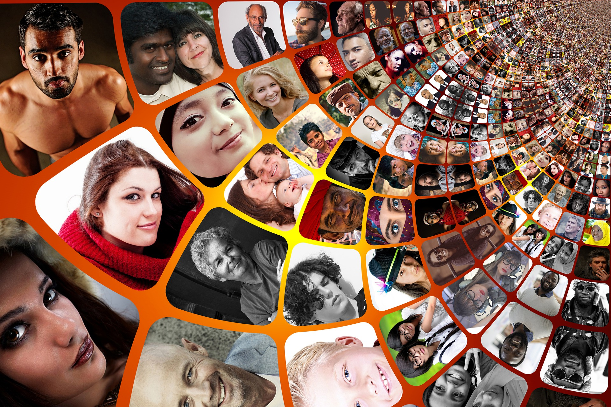
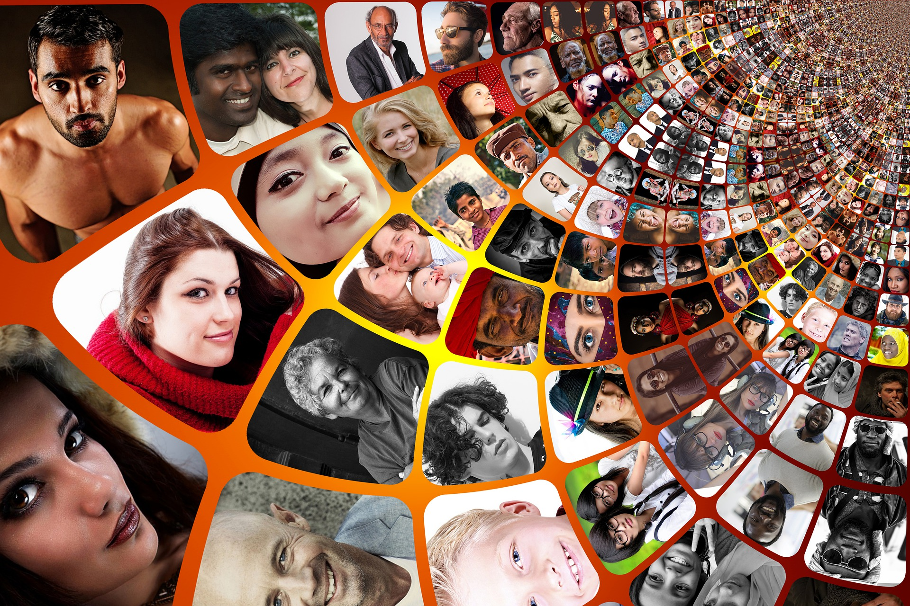

Advantages of Social Media
1) Connectivity :
This is one of the important advantage of social media. We are connet with our friends , family ,and sometimes unknown persons through social media. Through social media and its Connectivity anybody can be share their views , photo , etc in a seconds across the world. It leads to worldwide connections . It can connect innumerable users from any place at any time.
2) Education :
This is the biggest advantages of social media. Through social media we can learn any thing at any time. Before the biggest problem came on world which is corona virus , people used social media for education. but now a situation is totally changed. About almost learner Use social media for education . It makes learning easier by connecting educators and experts all over the world with the learner. It also helps in improving skills by enhancing knowledge and creativity.
3) Information and Updates :
Decade before we got the the news from television , radio , newspapers . That time also social media was present but we did not used it as much. But today if we want single peice of imformation we check on our mobile first. Any news , informations or updates , we search our mobile first . Social media provide a correct and updated information with real photographs also . Through social media , you could keep yoursels updated with the information about any happening in the world or in someone's life.
4) Awareness :
Like television and newspapers , social media also aware people in any situation . we aware from fraud things. some times we learn new things and get updated . social media creates awareness in the minds of people. Social media has made all people aware of happenings around the world.
5) Share anything with others :
You can share anything any where with others . In this Pandemic , any body feel very friendly with social media because when we feel alone we share our feelings with our loved ones . People shares their photos , poems ,stories ,receipes , innovations as well as anger also. It enhances and showcases hte creativity of a person and helps in reaching it out to millions of users.
6) Helps in building communities :
In our world , their are diiferent communities people . It helps to build relationships among communities by creating a feeling of oneness. Through social media we connect with numbers of person . Facebook is one of the example of social media through people connected with each others . Even they have a different communities , diferent genders , age groups country . Their are so many examples are presents where two unknown persons meet at social media and they came together as life partner.
7) Noble cause :
Social media is used for Noble needs. If any person want some helps in desease or in any domestic problems they promote on social media . if any childs are orphans , or suffer from major decease then people promote on social media and they get help also. Many people use it to help such people who are in need of funds . It is the easiest and quickest to promote a noble cause.
8) Mental Health :
Social media is usefull for mental health . Social media acts as a great stress buster . if we suffer from loneliness , stress , depression then social media helps to feel relax. we fight against the stress . We seen some good videos , funny stuffs . We listen some motivational music thaughts . Or even we start chating with other people . we do creative work on social media .
Social media for bussiness
1) Brand Reputation :
Social media is very usefull for the brand reputation . People promotes their products on social media . They provides real photographs , offers , etc . We also check any products and brands of products on social media . We cross checked all rights and properties of brands on social media only. Social Media has helped in increasing bussiness rapport by building goodwill amongst people and its promotions leads to an increase in sales, therby increasing profits.
2) Brand awareness :
Brand awareness is increase due to social media. people see products on social media . Eye catching products promotions increase the sell of products. Companies publish realistic images with attractive offers on social media which steals the attention of customres. online bussiness are rapidly grow on the social media.
3) Custom interaction :
As before say online bussiness increasing rapidly . Customres orders any products from at home with their mobile phones in one click . products are delivered at home if customres are happy they give a good feedback to the service and product . If products are not good then they able to return of product . Different types of users will provide varied comments and reviews , which would help in improving the areas you need to work on to provide customer satisfaction.
4) Promotion :
Social media is a great platform for the promotion of products . Because from school childs to old person use the social media . Social media acts as a great promoter in the field of online bussiness and marketing. It builds business online and increase its sell also. Social media not only increase the products demand but also increase the wealth of bussinessman also.
 
